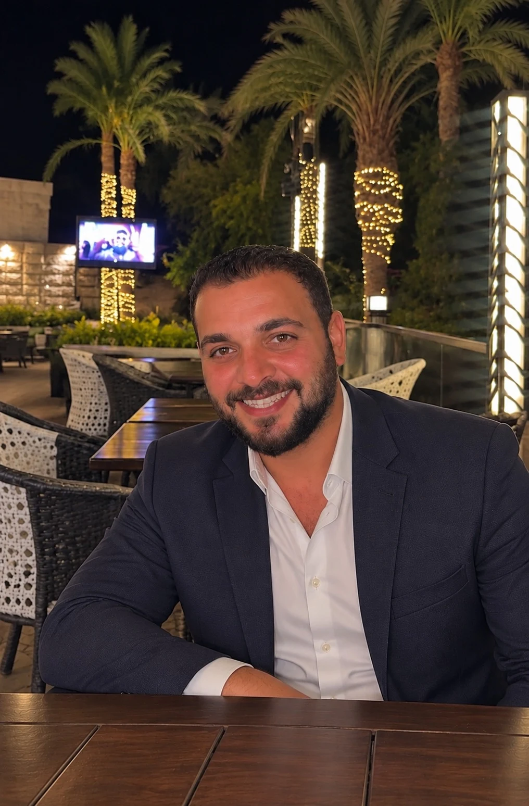

Shop Drawings
Structural drawing preparation and detailing with attention to constructability and technical requirements.
I'm Mohamed Bastawy, a Civil Technical Office Engineer focused on structural detailing, shop drawings, quantity surveying and technically sound construction delivery.

I bridge the gap between structural design, technical documentation, and on-site execution.
With more than four years in structural construction, technical office operations and site execution, my work spans shop drawings, material take-offs, steel optimization, RFIs, material submittals and drawing reviews. I focus on technical accuracy, specification compliance and practical coordination with site teams.
My experience includes roles across construction, structural engineering and technical office delivery, including work at CSCEC International Construction Egypt and GAMA Construction.
Focused capabilities grounded in real technical office and site engineering experience.
Structural drawing preparation and detailing with attention to constructability and technical requirements.
Quantity take-offs, bills of quantities and material measurement for construction activities.
Reinforcement details, drawing review and structural coordination across technical deliverables.
Attention to reinforcement material efficiency and practical steel detailing requirements.
RFIs, material submittals, drawing reviews and technical support to site teams.
Construction and excavation supervision, subcontractor coordination and specification checks.
Selected structural documentation. Related sheets are presented together as coherent drawing sets.
Ground beam key plan and reinforcement details for multiple beam segments.
First-floor column grid, axes and reinforced-concrete column section details.
Foundation key plan, isolated footing reinforcement sections, and raft reinforcement details from the supplied drawing set.
Drawing previews have title-block areas removed for privacy. Original sheets should be reviewed and approved for public release before replacing these previews.
Engineering software identified in the professional CV.
Professional positions and dates drawn from the supplied CV.
CSCEC International Construction Egypt
Hurghada, EgyptGAMA Construction
Technical office work associated with the Obelisk Solar Power Plant is mentioned in the CV.KAYAN Construction, Designs & Supervision
Hurghada, EgyptAl-Faisal Real Estate
EgyptEDECS
Construction and excavation supervision, subcontractor blueprint compliance, BOQs and backfill material checks.A representative technical office process aligned with the responsibilities documented in the CV.
Review structural drawings, specifications and site requirements.
Prepare and review shop drawings, reinforcement details and quantities.
Manage clarifications, submittals and coordination with site teams.
Review documentation for consistency and specification compliance.
Have a technical office opportunity, engineering project or professional collaboration in mind? I'd be glad to connect.